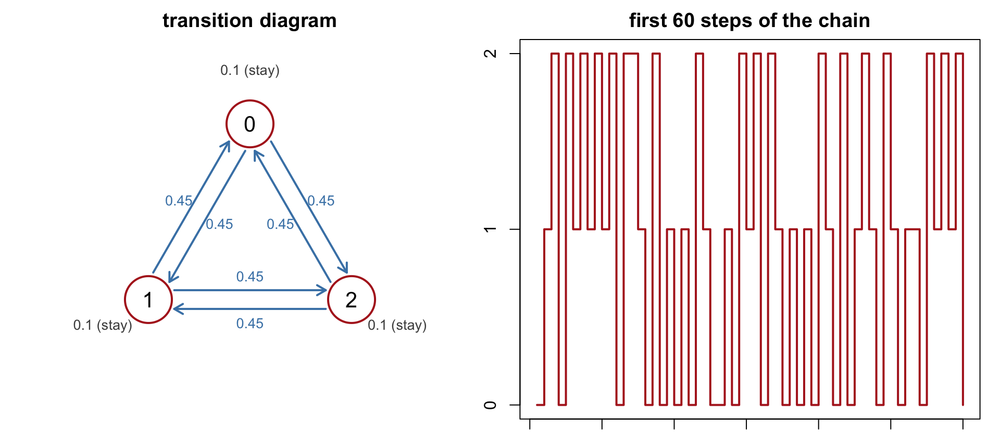
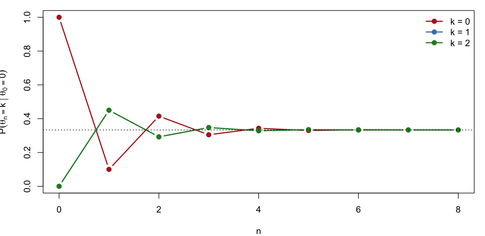
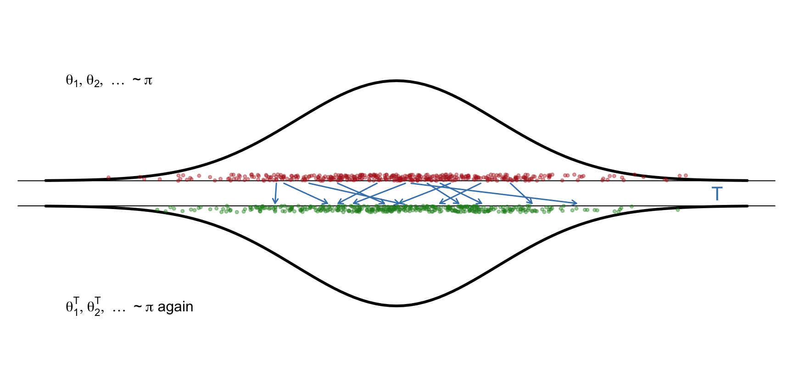
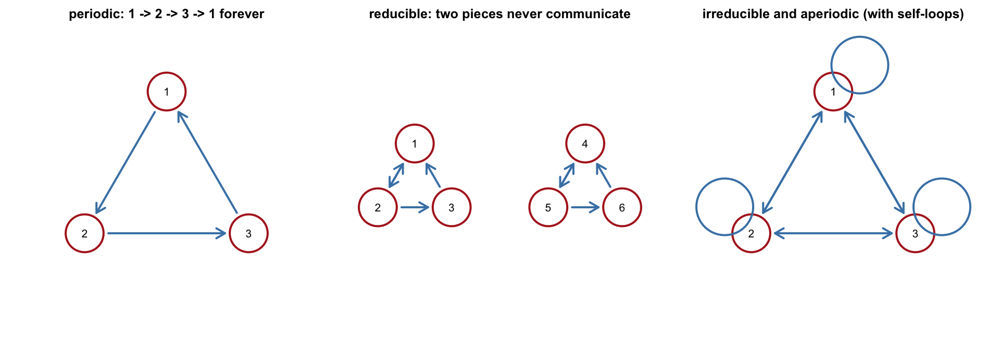
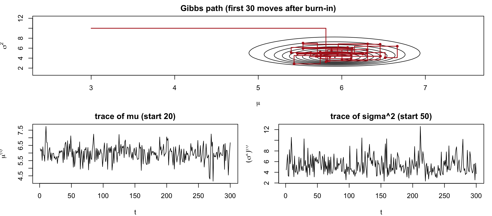
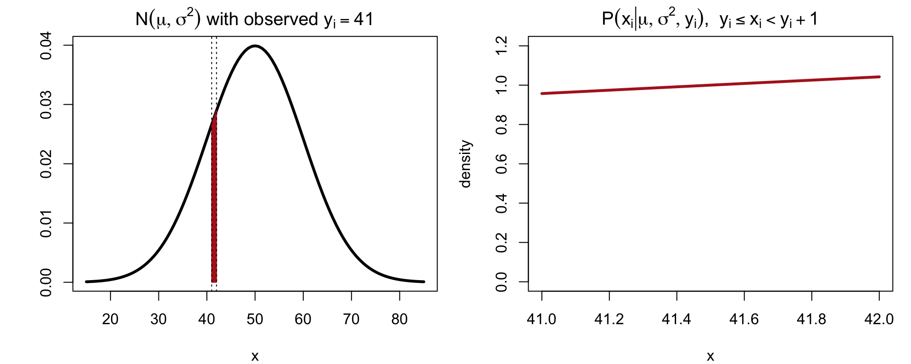
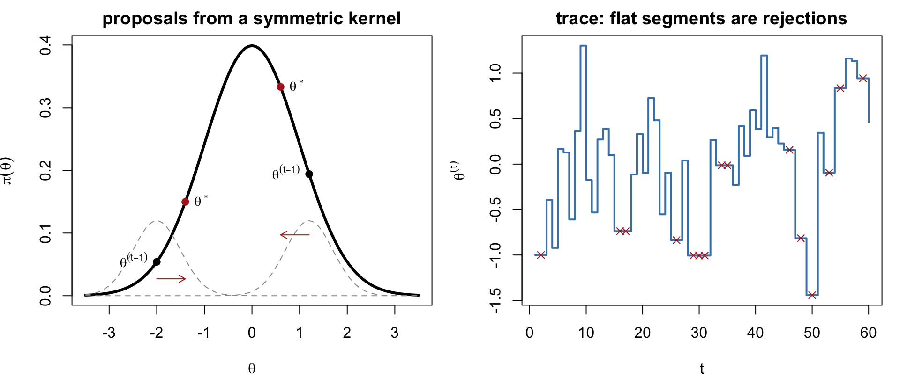
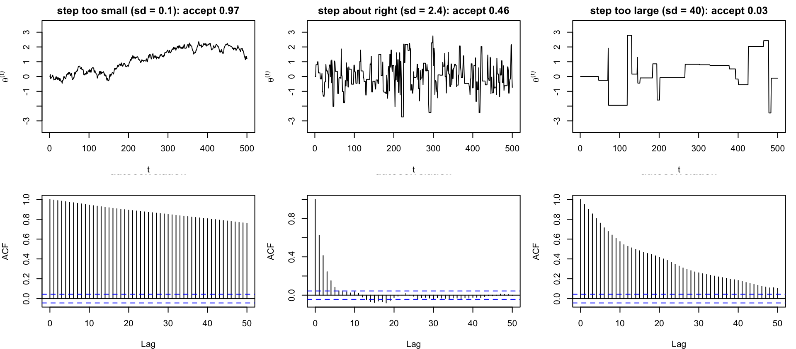
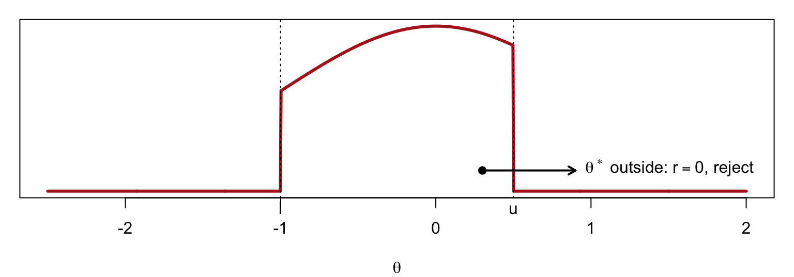
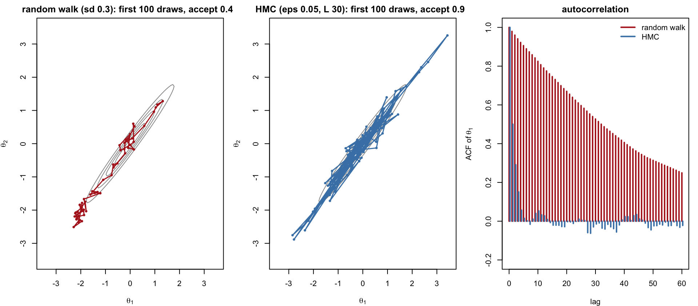

Draw \theta_1,\theta_2,\ldots,\theta_n\sim f for a target f (typically a posterior known up to a constant), then use \frac1n\sum_i a(\theta_i).
Rejection sampling and importance sampling use a fixed proposal g; in high dimensions no fixed g resembles f, and they collapse
MCMC instead builds a random process\theta_1,\theta_2,\theta_3,\ldots that moves locally, and is designed so that, eventually, each \theta_i is distributed as f
The draws are dependent, and only correct in the limit; the price for working in any dimension
We first need a little theory of Markov chains.
Markov Chains and Transition Distributions
Definition.\{\theta_i: i = 0,1,2,\ldots\} is a Markov chain if the future depends on the past only through the present: P(\theta_i\mid\theta_0,\theta_1,\ldots,\theta_{i-1}) = P(\theta_i\mid\theta_{i-1})
We write T(\theta_i\mid\theta_{i-1}), or T(\theta_{i-1}\to\theta_i), and call it the transition distribution (a matrix for a finite state space, a conditional density for a continuous one).
A chain is specified by a starting value (or distribution) \theta_0 and T; simulating it means drawing \theta_i\sim T(\cdot\mid\theta_{i-1}) repeatedly.
Example: A Three-State Chain
State space \{0,1,2\}. From each state, stay with probability 0.1, move to each of the other two states with probability 0.45: T = \begin{pmatrix} 0.1 & 0.45 & 0.45\\ 0.45 & 0.1 & 0.45\\ 0.45 & 0.45 & 0.1\end{pmatrix}, \qquad T_{jk} = P(\theta_i = k\mid\theta_{i-1} = j)
Whatever the start, the long-run frequencies are (1/3,1/3,1/3).
Example: A Three-State Chain (Continued)

Convergence and the Equilibrium Distribution
Under regularity conditions (next slide), for every starting value \theta_0, \lim_{n\to\infty} P(\theta_n = \theta\mid\theta_0) = \pi(\theta)
\pi is the equilibrium (stationary, limiting) distribution of the chain: after many steps the chain forgets where it started, and the marginal distribution of \theta_n settles at \pi.
For the three-state chain, P(\theta_n = \cdot\mid\theta_0 = 0) is the first row of T^n:
n = 1: 0.1 0.45 0.45
n = 2: 0.415 0.2925 0.2925
n = 3: 0.3048 0.3476 0.3476
n = 4: 0.3433 0.3283 0.3283
n = 5: 0.3298 0.3351 0.3351
n = 6: 0.3346 0.3327 0.3327
Convergence (Continued)
P(\theta_n = k\mid\theta_0 = 0) for k = 0,1,2 as a function of n. Starting from state 0 with certainty, the distribution converges geometrically to \pi = (1/3,1/3,1/3).

Invariance Condition
\pi(\theta) a distribution, T(\cdot,\cdot) a transition. We say T leaves \pi invariant if \int \pi(\theta)\,T(\theta,\theta^T)\,d\theta = \pi(\theta^T) \qquad\text{for all }\theta^T
(for a finite state space, \pi^\top T = \pi^\top: \pi is a left eigenvector of T with eigenvalue 1).
Meaning: if \theta\sim\pi and \theta^T\sim T(\theta,\cdot), then \theta^T\sim\pi. One step of the chain applied to a \pi-distributed input returns a \pi-distributed output: \pi is a fixed point of T.
Invariance is what makes \pi a candidate equilibrium: once the chain reaches \pi, it stays there. Check for the three-state chain: \big(\tfrac13,\tfrac13,\tfrac13\big)\,T = \big(\tfrac13(0.1+0.45+0.45),\ \ldots\big) = \big(\tfrac13,\tfrac13,\tfrac13\big)
Invariance (Continued)
Points \theta_1,\theta_2,\theta_3,\ldots drawn from \pi (top), each moved one step by T (arrows). The moved points \theta_1^T,\theta_2^T,\ldots (bottom) are again distributed as \pi.

When Does the Chain Converge to \pi?
Given a target \pi, design a transition T such that
Invariance: T leaves \pi invariant
Aperiodicity: the chain does not cycle deterministically (e.g. 1\to2\to3\to1\to\cdots never converges, it oscillates)
Irreducibility: every state can be reached from every other state (a chain that splits into non-communicating pieces, or one that never moves, converges to something that depends on where it started)
Then, for any \theta_0, \theta_n\to\pi in distribution, and ergodic averages converge: \frac1n\sum_{i=1}^n a(\theta_i)\ \longrightarrow\ E_\pi\big[a(\theta)\big]
Practice: simulate T long enough, discard the initial portion (burn-in), and treat the remaining \theta_i as (dependent) draws from \pi.
When Does the Chain Converge (Continued)

Detailed Balance (Reversibility)
T satisfies detailed balance with respect to \pi if \pi(\theta)\,T(\theta,\theta^T) = \pi(\theta^T)\,T(\theta^T,\theta) \qquad\text{for all }\theta,\theta^T
The flow of probability from \theta to \theta^T equals the flow back: the chain looks the same run forwards or backwards (“reversible”)
Note: this does not say T(\theta,\theta^T) = T(\theta^T,\theta); the transition itself need not be symmetric, only the flow weighted by \pi
Inverse gamma: \sigma^2\sim\text{IG}(a_0,\lambda_0) means 1/\sigma^2\sim\text{Gamma}(a_0,\lambda_0), with density p(\sigma^2)\propto\frac{1}{(\sigma^2)^{a_0+1}}\,e^{-\lambda_0/\sigma^2}, \qquad a_0\text{ shape},\ \lambda_0\text{ scale} (the extra 1/(\sigma^2)^2 relative to the gamma kernel is the Jacobian of \tau = 1/\sigma^2).
m = \dfrac{\mu_0/\sigma_0^2 + n\bar x/\sigma^2}{1/\sigma_0^2 + n/\sigma^2}: precision-weighted average of prior mean and sample mean; n/\sigma^2 is the weight of the data
which is again an inverse gamma kernel: \sigma^2\mid\mu,x\ \sim\ \text{IG}\Big(\frac n2+a_0,\ \frac12\sum_{i=1}^n(x_i-\mu)^2+\lambda_0\Big)
= \text{IG}\Big(\frac{n+\alpha}{2},\ \frac{\alpha w+\sum_i(x_i-\mu)^2}{2}\Big)
Shape: prior “sample size” \alpha plus n; scale: prior “sum of squares” \alpha w plus the data sum of squares
To draw: \tau\sim\text{Gamma}(\text{shape},\text{rate}) with the same two numbers, then \sigma^2 = 1/\tau
The Gibbs Sampler
Starting from (\mu^{(0)},(\sigma^2)^{(0)}), repeat for t = 1,2,\ldots:
Each step replaces one coordinate by a draw from its full conditional given the current values of the others.
Why it works. A step that draws \theta_j\sim\pi(\theta_j\mid\theta_{-j}) leaves \pi invariant: if (\theta_j,\theta_{-j})\sim\pi, then \theta_{-j}\sim\pi(\theta_{-j}), and replacing \theta_j by a draw from \pi(\theta_j\mid\theta_{-j}) gives a pair with joint density \pi(\theta_{-j})\pi(\theta_j\mid\theta_{-j}) = \pi. Cycling through all coordinates keeps \pi invariant; with positive full conditionals the chain is irreducible and aperiodic.
No tuning parameters, no rejections
Requires full conditionals that can be sampled; conjugate structure gives them for free
Strong posterior correlation between coordinates slows mixing
The Gibbs Sampler (Continued)
x <-rnorm(20, 5, 2); n <-length(x); xbar <-mean(x)mu0 <-0; s02 <-100; a0 <-1; lam0 <-1# prior: N(0, 10^2), IG(1, 1)gibbs <-function(iters, mu =0, s2 =1) { out <-matrix(NA, iters, 2, dimnames =list(NULL, c("mu", "s2")))for (t in1:iters) { v <-1/ (1/ s02 + n / s2); m <- v * (mu0 / s02 + n * xbar / s2) mu <-rnorm(1, m, sqrt(v)) s2 <-1/rgamma(1, shape = n /2+ a0, rate =sum((x - mu)^2) /2+ lam0) out[t, ] <-c(mu, s2) } out }draws <-gibbs(5000, mu =20, s2 =50) # deliberately poor startround(rbind(posterior_mean =colMeans(draws[-(1:200), ]), posterior_sd =apply(draws[-(1:200), ], 2, sd)), 3)
mu s2
posterior_mean 5.902 5.273
posterior_sd 0.508 1.784
The Gibbs Sampler (Continued)
Left: the first 30 Gibbs moves on the joint posterior (contours). Each move is horizontal or vertical, since one coordinate changes at a time. Right: trace plots showing the burn-in from the poor start.

Data Augmentation: Rounded Observations
Suppose we observe only y_i = \lfloor x_i\rfloor (e.g. ages in whole years), with x_i\sim N(\mu,\sigma^2) latent. Treat x_1,\ldots,x_n as extra unknowns and Gibbs-sample all three blocks. Repeat:
x_i^{(t)}\sim P\big(x_i\mid\mu^{(t-1)},(\sigma^2)^{(t-1)},y_i\big), for i = 1,\ldots,n
Steps 2–3 are the conditionals already derived, applied to the imputed x. For step 1, P(x_i\mid\mu,\sigma^2,y_i) = \frac{P(x_i\mid\mu,\sigma^2)\,I\big(y_i = \lfloor x_i\rfloor\big)}{\int P(x_i\mid\mu,\sigma^2)\,I\big(y_i = \lfloor x_i\rfloor\big)\,dx_i}
= \frac{P(x_i\mid\mu,\sigma^2)}{\int_{y_i}^{y_i+1}P(x_i\mid\mu,\sigma^2)\,dx_i}, \qquad x_i\in[y_i,y_i+1)
a normal truncated to [y_i,y_i+1), drawn by inversion: x_i = \mu + \sigma\,\Phi^{-1}\big(U\big) with U\sim\text{Unif}\big(\Phi(\tfrac{y_i-\mu}\sigma),\Phi(\tfrac{y_i+1-\mu}\sigma)\big).
Data Augmentation (Continued)
The conditional of a latent x_i is the N(\mu,\sigma^2) density restricted to the unit interval [y_i,y_i+1) and renormalized.

The same pattern handles censored, binned, or interval-valued data: augment with the latent exact values, and every conditional becomes standard.
3. Metropolis–Hastings
The Metropolis–Hastings Algorithm
Target \pi(\theta), known up to a constant. Choose a proposal distribution \tilde T(\theta^*\mid\theta) that we can sample from. Starting from \theta^{(0)}, repeat for t = 1,\ldots,n:
Draw a proposal \theta^*\sim\tilde T(\cdot\mid\theta^{(t-1)})
Compute the acceptance ratio r = \min\left\{\frac{\pi(\theta^*)\,\tilde T(\theta^{(t-1)}\mid\theta^*)}{\pi(\theta^{(t-1)})\,\tilde T(\theta^*\mid\theta^{(t-1)})},\ 1\right\}
Draw U\sim\text{Unif}(0,1). If U<r, set \theta^{(t)} = \theta^* (accept); otherwise set \theta^{(t)} = \theta^{(t-1)} (reject and stay)
Only the ratio \pi(\theta^*)/\pi(\theta^{(t-1)}) is needed: normalizing constants cancel
A rejected step still produces a draw: the current value is repeated, unlike rejection sampling
Unlike Gibbs, no conditional distributions are needed; any \tilde T works in principle
Symmetric Proposals: Random-Walk Metropolis
If \tilde T is symmetric, \tilde T(\theta^*\mid\theta) = \tilde T(\theta\mid\theta^*), e.g. \tilde T(\theta^*\mid\theta^{(t-1)}) = N\big(\theta^{(t-1)},\ \varsigma^2\big)
the proposal terms cancel and r = \min\left\{\frac{\pi(\theta^*)}{\pi(\theta^{(t-1)})},\ 1\right\}
Uphill proposals (\pi(\theta^*)\ge\pi(\theta^{(t-1)})) are always accepted
Downhill proposals are accepted with probability equal to the density ratio; the chain can go downhill, which is what lets it explore rather than just climb
\varsigma is the step size: the single tuning parameter of the algorithm
Random-Walk Metropolis (Continued)
Left: two proposals from a N(\theta^{(t-1)},\varsigma^2) kernel; the uphill one is accepted, the downhill one accepted with probability \pi(\theta^*)/\pi(\theta^{(t-1)}). Right: a trace with rejections showing as flat segments.

Choice of Step Size

Target N(0,1). Tiny steps are almost always accepted but move slowly; huge steps are almost always rejected; both give highly autocorrelated chains.
Choice of Step Size (Continued)
The chain is a sequence of dependent draws. For a stationary chain with lag-k autocorrelations \rho_k, \text{Var}\Big(\frac1T\sum_{t=1}^T\theta^{(t)}\Big)\ \approx\ \frac{\sigma^2}{T}\Big(1 + 2\sum_{k=1}^\infty\rho_k\Big) = \frac{\sigma^2}{T_{\text{eff}}},
\qquad T_{\text{eff}} = \frac{T}{1+2\sum_k\rho_k} so the goal of tuning is small autocorrelation, not a high acceptance rate
For random-walk Metropolis on a smooth target, the optimal acceptance rate is about 0.234 in high dimension (up to \approx0.44 in one dimension), i.e. an optimal rejection rate around 0.75
A rejection rate that is too low signals steps that are too small: the chain crawls, and traces look smooth and deceptively stable
Rule of thumb: scale \varsigma to roughly 2.4/\sqrt d times the posterior standard deviation; tune during burn-in, then fix it (changing \varsigma adaptively during the kept run breaks the Markov property unless done carefully)
Random-walk Metropolis with \theta^*\sim N(\theta^{(t-1)},\varsigma^2) and r = \min\left\{\frac{\pi(\theta^*)}{\pi(\theta^{(t-1)})},\ 1\right\}
If \theta^* falls outside [l,u], then \pi(\theta^*) = 0, r = 0, and the proposal is rejected; the chain stays at \theta^{(t-1)}. No special handling is needed: the indicator in \pi does it.

Example: Posterior of a Normal Sample by Metropolis–Hastings
Same model as the Gibbs example. \sigma^2>0 is awkward for a normal random walk (proposals below zero are wasted), so reparametrize w = \log\sigma^2, \sigma^2 = e^w, w\in\mathbb R.
Change of variables. If X\sim f_X and Y = t(X), then f_Y(y) = f_X\big(t^{-1}(y)\big)\,\big|\tfrac{\partial t^{-1}(y)}{\partial y}\big|. With t^{-1}(w) = e^w, the Jacobian is e^w, so the posterior in (\mu,w) is P(\mu,w\mid x)\ \propto\ P(x_1,\ldots,x_n\mid\mu,e^w)\cdot p(\mu)\cdot p_{\sigma^2}(e^w)\cdot e^w
Forgetting the factor e^w targets the wrong distribution.
Algorithm. Random-walk proposal on (\mu,w) jointly, (\mu^*,w^*) = (\mu,w) + \varsigma\,(z_1,z_2), z\sim N_2(0,I), and r = \min\left\{\exp\big[\log P(\mu^*,w^*\mid x) - \log P(\mu,w\mid x)\big],\ 1\right\}
always computed on the log scale.
Example (Continued)
log_post <-function(mu, w) { s2 <-exp(w)sum(dnorm(x, mu, sqrt(s2), log =TRUE)) +dnorm(mu, mu0, sqrt(s02), log =TRUE) + (-(a0 +1) *log(s2) - lam0 / s2) + w } # + w is the log Jacobianmh_normal <-function(iters, step, mu =0, w =0) { out <-matrix(NA, iters, 2, dimnames =list(NULL, c("mu", "s2"))); acc <-0; lp <-log_post(mu, w)for (t in1:iters) { mu_p <- mu + step[1] *rnorm(1); w_p <- w + step[2] *rnorm(1); lp_p <-log_post(mu_p, w_p)if (log(runif(1)) < lp_p - lp) { mu <- mu_p; w <- w_p; lp <- lp_p; acc <- acc +1 } out[t, ] <-c(mu, exp(w)) }list(draws = out, accept = acc / iters) }fit <-mh_normal(20000, step =c(1.2, 0.6))c(accept = fit$accept)
Gibbs and Metropolis–Hastings target the same posterior; their averages agree up to Monte Carlo error.
Justification of Metropolis–Hastings
Claim. The MH transition T satisfies detailed balance with respect to \pi, hence leaves \pi invariant.
For \theta^T\ne\theta, a move \theta\to\theta^T requires proposing \theta^T and accepting it: T(\theta\to\theta^T) = \tilde T(\theta\to\theta^T)\cdot\min\left\{\frac{\pi(\theta^T)\,\tilde T(\theta^T\to\theta)}{\pi(\theta)\,\tilde T(\theta\to\theta^T)},\ 1\right\}
(For \theta^T = \theta there is no density expression, the chain has a point mass from rejections, but detailed balance holds trivially there. Then
\begin{aligned}
\text{LHS} = \pi(\theta)\,T(\theta\to\theta^T)
&= \pi(\theta)\,\tilde T(\theta\to\theta^T)\cdot\min\left\{\frac{\pi(\theta^T)\,\tilde T(\theta^T\to\theta)}{\pi(\theta)\,\tilde T(\theta\to\theta^T)},\ 1\right\} \\
&= \min\Big\{\pi(\theta^T)\,\tilde T(\theta^T\to\theta),\ \pi(\theta)\,\tilde T(\theta\to\theta^T)\Big\}
\end{aligned}
By the same computation with the roles of \theta and \theta^T exchanged, \text{RHS} = \pi(\theta^T)\,T(\theta^T\to\theta) = \min\Big\{\pi(\theta)\,\tilde T(\theta\to\theta^T),\ \pi(\theta^T)\,\tilde T(\theta^T\to\theta)\Big\} = \text{LHS}. \qquad\blacksquare
Metropolis-within-Gibbs
\theta = (\theta_1,\theta_2). Gibbs sampling alternates \theta_1^{(t)}\sim\pi(\theta_1\mid\theta_2^{(t-1)}) and \theta_2^{(t)}\sim\pi(\theta_2\mid\theta_1^{(t)}). When a full conditional cannot be sampled directly:
Replace that step by a Metropolis–Hastings transition T_j(\theta_j\to\theta_j^T) that leaves \pi(\theta_j\mid\theta_{-j}) invariant
Only \pi(\theta_j\mid\theta_{-j})\propto\pi(\theta_j,\theta_{-j}) is needed, evaluated at the current \theta_{-j}: the joint posterior as a function of \theta_j alone
Since each block transition leaves \pi invariant (the argument for Gibbs applies to any \pi(\theta_j\mid\theta_{-j})-invariant T_j), the composite sweep leaves \pi invariant. A single MH step per block suffices; the inner chain need not converge.
Practical picture of most MCMC software: Gibbs updates where conjugacy allows, one-dimensional or block Metropolis (or slice sampling, Hamiltonian Monte Carlo) elsewhere, all combined in one sweep.
4. Hamiltonian Monte Carlo
Why Random Walks Struggle
A random-walk proposal has no sense of direction: in d dimensions it needs O(d) steps to move a distance of one posterior standard deviation, and along a narrow, correlated ridge it needs far more. Gibbs suffers the same way when coordinates are strongly correlated.
Hamiltonian Monte Carlo (HMC) uses the gradient\nabla\log\pi(\theta) to propose distant points with high acceptance.
Introduce an auxiliary momentump\in\mathbb R^d and the joint density \pi(\theta,p)\ \propto\ \exp\big\{-H(\theta,p)\big\}, \qquad
H(\theta,p) = \underbrace{-\log\pi(\theta)}_{U(\theta)\ \text{potential energy}} + \underbrace{\tfrac12\,p^\top M^{-1}p}_{K(p)\ \text{kinetic energy}}
The marginal of \theta is the target \pi(\theta); p\sim N_d(0,M) independently of \theta
M (the “mass matrix”) is a tuning choice, often I or a diagonal estimate of posterior precision
Physical picture: a particle at position \theta rolling on the surface U(\theta) with momentum p
Exact dynamics conserve H, preserve volume, and are reversible, so following them for any time and then accepting would leave \pi(\theta,p) invariant with acceptance probability 1. In practice the equations are discretized by the leapfrog integrator with step size \epsilon, repeated L times:
p \leftarrow p + \tfrac\epsilon2\,\nabla\log\pi(\theta), \qquad
\theta \leftarrow \theta + \epsilon\,M^{-1}p, \qquad
p \leftarrow p + \tfrac\epsilon2\,\nabla\log\pi(\theta)
Leapfrog is still volume-preserving and reversible (negate p and run backwards), so it can be used inside a Metropolis step; only energy conservation is approximate, with error O(\epsilon^2) per trajectory. The Metropolis correction removes this discretization bias.
The HMC Algorithm
Starting from \theta^{(0)}, repeat for t = 1,\ldots,n:
Draw a fresh momentum p\sim N_d(0,M); set (\theta,p) with \theta = \theta^{(t-1)}
Run L leapfrog steps of size \epsilon to obtain (\theta^*,p^*)
Accept \theta^{(t)} = \theta^* with probability r = \min\Big\{\exp\big[-H(\theta^*,p^*) + H(\theta,p)\big],\ 1\Big\} otherwise \theta^{(t)} = \theta^{(t-1)}
Step 1 is a Gibbs update of p from its conditional, step 2–3 is a Metropolis update of (\theta,p) with a deterministic, reversible proposal (momentum negation makes it symmetric); each leaves \pi(\theta,p) invariant
Because H is nearly conserved, acceptance stays high (target \approx0.65–0.8) even though \theta^* is far from \theta^{(t-1)}
Needs \nabla\log\pi: analytic, or by automatic differentiation
Tuning: \epsilon (too large: leapfrog unstable, rejections) and L (too small: random-walk behaviour; too large: trajectory turns back). The No-U-Turn Sampler (NUTS) chooses L adaptively and is the default in Stan
HMC versus Random-Walk Metropolis
Target: bivariate normal with correlation 0.98. Same number of iterations for both samplers.

Random-walk Metropolis creeps along the ridge with autocorrelation persisting for dozens of lags; HMC follows the ridge in a single trajectory and its draws are nearly independent.
Summary
A Markov chain with transition T converges to its equilibrium \pi from any start if T leaves \pi invariant and is irreducible and aperiodic; detailed balance\pi(\theta)T(\theta,\theta^T) = \pi(\theta^T)T(\theta^T,\theta) is the practical way to guarantee invariance
MCMC: design T for the target posterior, run it, discard burn-in, and average the dependent draws; \text{Var}(\bar\theta)\approx\sigma^2(1+2\sum_k\rho_k)/T, so autocorrelation, not just chain length, governs accuracy
Gibbs sampling: update each coordinate from its full conditional; automatic when the model is conditionally conjugate; data augmentation adds latent variables to make conditionals standard
Metropolis–Hastings: propose from any \tilde T, accept with probability \min\{\pi(\theta^*)\tilde T(\theta\mid\theta^*)/[\pi(\theta)\tilde T(\theta^*\mid\theta)],1\}; random-walk proposals need a tuned step size (acceptance \approx0.25–0.45); transform bounded parameters and include the Jacobian
Metropolis-within-Gibbs combines the two: MH for the blocks without closed-form conditionals
Hamiltonian Monte Carlo adds momentum and follows gradient-driven trajectories (leapfrog + Metropolis correction), giving distant proposals with high acceptance and nearly independent draws; the default in modern software (Stan)